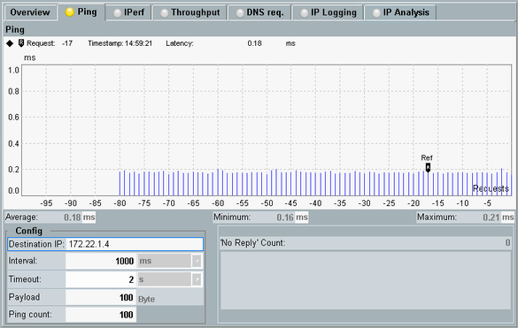

The "Ping" measurement sends ping requests to a configurable IP address and displays the resulting ping latency in a diagram.
The "Ping" tab allows you to configure the properties of the ping command and displays the result diagram.

The diagram provides a graphical presentation of the measured ping latency for each ping request. The X-axis indicates the processed ping requests, with the last processed request labeled 0, the previously processed request labeled -1, and so on.
Remote command:The values below the diagram indicate the average, minimum and maximum of all values in the diagram.
Remote command:Indicates the number of ping requests with no reply. In the result diagram, such requests are displayed as gaps (ping latency = 0 ms).
The reason for the latest ping request with no reply is indicated below the parameter, e.g. timeout or no route to host.
Remote command:- "Destination IP": IP address that you want to ping
- "Interval": pinging interval
- "Timeout": timeout for unanswered ping requests
- "Payload": packet size used as probe
- "Ping Count": number of echo request packets to be sent
You can change values that are not grayed out even during the measurement, for example, the "Interval".
Remote command:Turn the measurement on or off using the [ON | OFF] or [RESTART | STOP] keys. Alternatively, right-click the "Ping" softkey.
The softkey shows the current measurement state. Additional measurement substates can be retrieved via remote control.
Remote command: